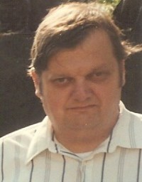

Peder Jørgen Anderson
M, #60457, f. 1858
Biografi
| Sist redigert |
1 januar 2011 00:00:00 |
Gjertina Haldorsdatter Dyrkolbotn
K, #60458, f. 18 januar 1878, d. 3 november 1966
Foreldre
Biografi
Gjertina Haldorsdatter Dyrkolbotn ble født den 18 januar 1878 på/i Mo sogn, Hosanger prestegjeld, Hordaland. Hun giftet seg med
Peder Jørgen Anderson omtrent 1899. Hun døde den 3 november 1966 på/i Muscatine, Iowa, USA. Hun ble gravlagt på/i Greenwood Cemetery, Muscatine, Muscatine, Iowa, USA.
Gjertina Haldorsdatter Dyrkolbotn was also known as Gjertina Anderson. Hun was also known as Tena K Ramstad. Hun innvandret til USA i 1894.
| Sist redigert |
20 august 2022 20:28:43 |
Leonard Paul Lindblad
M, #60459, f. 20 mars 1918, d. 4 august 1983
Biografi
Leonard Paul Lindblad ble født den 20 mars 1918 på/i South Dakota, USA. Han giftet seg med
Esther Lindblad Wahl. Han og
Esther Lindblad Wahl ble skilt. Han døde den 4 august 1983 på/i Multnomah County, Oregon, USA. Han ble gravlagt på/i Willamette National Cemetery, Portland, Multnomah County, Oregon, USA.
| Sist redigert |
7 mars 2025 18:05:14 |
Sivert K. Kloppen
M, #60461, f. 9 juli 1888, d. mai 1968
Biografi
Sivert K. Kloppen ble født den 9 juli 1888 på/i Canton, Lincoln County, South Dakota, USA. Han giftet seg med
Aletta Petra Stangeland den 23 desember 1914 på/i Canton, Lincoln County, South Dakota, USA. Han døde i mai 1968 på/i Sioux Falls, Minnehaha County, South Dakota, USA.
| Sist redigert |
23 juni 2026 21:32:51 |
Aletta Petra Stangeland
K, #60462, f. 17 januar 1895, d. 16 mai 1983
Biografi
Aletta Petra Stangeland ble født den 17 januar 1895 på/i Stavanger, Rogaland. Hun giftet seg med
Sivert K. Kloppen den 23 desember 1914 på/i Canton, Lincoln County, South Dakota, USA. Hun døde den 16 mai 1983 på/i Sioux Falls, Minnehaha County, South Dakota, USA.
Aletta Petra Stangeland was also known as Aletta Petra Kloppen.
| Sist redigert |
1 april 2025 22:23:53 |
David Stephen Wahl
M, #60464, f. 2 juli 1952, d. 5 september 2017
Foreldre

David Stephen Wahl
Biografi
David Stephen Wahl ble født den 2 juli 1952 på/i Omaha, Douglas, Nebraska, USA. Han døde den 5 september 2017 på/i Omaha, Douglas County, Nebraska, USA.
| Sist redigert |
21 februar 2025 22:57:44 |
| Slektskap | 4-menning til Håkon Wahl |
Lucy Helen Ferguson
K, #60473, f. 27 oktober 1923, d. 29 november 2005
Biografi
Lucy Helen Ferguson ble født den 27 oktober 1923 på/i Omaha, Douglas, Nebraska, USA. Hun giftet seg med
Robert Harold Wahl. Hun døde den 29 november 2005 på/i Scottsdale, Maricopa, Arizona, USA. Hun ble gravlagt på/i Saints Peter and Paul Cemetery, Saint Louis, St. Louis City, Missouri, USA.
Lucy Helen Ferguson was also known as Lucy Wahl.
| Sist redigert |
30 oktober 2024 17:56:03 |
Robert Scott Wahl
M, #60474, f. 24 juli 1947, d. 1965
Foreldre
Biografi
Robert Scott Wahl ble født den 24 juli 1947 på/i Douglas, Nebraska, USA. Han døde i 1965 på/i Clayton, St. Louis, Missouri, USA. Han ble gravlagt på/i Saints Peter and Paul Cemetery, Saint Louis, St. Louis City, Missouri, USA.
| Sist redigert |
30 oktober 2024 17:51:10 |
| Slektskap | 4-menning til Håkon Wahl |
{kind=link}